Chapter 8 Moving Beyond Linearity
Skipping.
If we use \(d=1\) decision trees, then they will only split on one variable at a time. Let’s say that the data dimensions were ordered in terms of importance, that is we split \(x=(x_1,\dots,x_p)\) first on \(x_1\), then on \(x_2\). Then the decision trees will only ever split along one of these variables. One the first step, we will get that function \(\hat{f}(x)=\hat{f}^1(x_1)\). Next, we split on the residuals, so we will split on \(x_2\), so \(\hat{f}(x) = \hat{f}^1(x_1) + \hat{f}^2(x)\). We repeat this process possibly for all \(p\), so \(\hat{f}(x) = \sum_{i=1}^p \hat{f}^i(x_i)\).
Of course we expect to split variable dimensions multiple times, at least for some of them. Let’s say we split \(x_1\) twice, then we get some other function \(\hat{g}^1(x_1)\). This is added so we get \(\hat{f}(x) = \sum_{i=1}^p \hat{f}^i(x_i)+ \hat{g}(x_1)\). We can then update \(\hat{f}^{1*}(x_1) = \hat{f}^1(x_1) + \hat{g}^1(x_1)\). Then our tree is still additive.
- As a refresher, here are the equations \[\begin{align} E &= 1 - \max(\hat{p}_{m1}, \hat{p}_{m2}) = \max(\hat{p}_{m1}, 1-\hat{p}_{m1}) &\text{Classification error} \\ G &= \sum_{k=1}^2 \hat{p}_{mk}(1-\hat{p}_{mk}) = 2\hat{p}_{m1}(1-\hat{p}_{m1}) &\text{Gini index} \\ D &= - \sum_{k=1}^2 \hat{p}_{mk} \log \hat{p}_{mk} = \hat{p}_{m1} \log \hat{p}_{m1} + (1 -\hat{p}_{m1}) \log (1\hat{p}_{m1}) &\text{Entropy} \end{align}\]
E <- function(p) {
1-pmax(p,1-p)
}
G <- function(p) {
2*p*(1-p)
}
D <- function(p) {
-(p*log(p) + (1-p)*log(1-p))
}
p <- seq(0,1,.01)
matplot(p,cbind(E(p),G(p),D(p)),type="l")
legend(x="topright",c("E","G","D"),lty=1:3,col=1:3)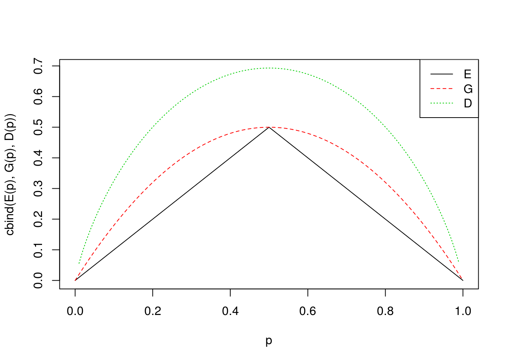
- I don’t know a good way to do this yet.
- I will put
X1on the x-axis andX2on the y-axis.
plot(x=NULL,y=NULL,xlim=c(-1,2),ylim=c(0,3),ylab="X2",xlab="X1") abline(h=1) #root, X2 < 1 abline(h=2) #first level, second branch, X2 < 2 text(x=.5,y=2.5,"2.49") #this is the right most terminal node lines(x=c(0,0),y=c(1,2)) #third level bramch. text(x=-.5,y=1.5,"-1.06") #left branch left terminal node text(x=1.25,y=1.5,"0.21") #left branch right terminal mode lines(x=c(1,1),y=c(-2,1)) text(x=0,y=.5,"-1.80") text(x=1.5,y=.5,"0.63")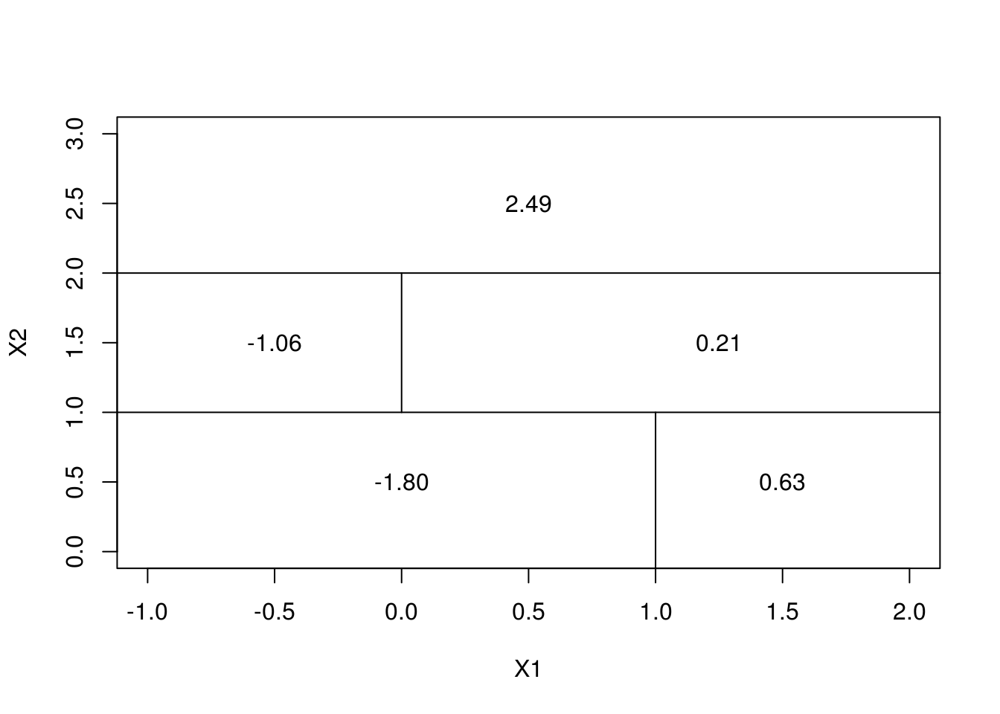
I will assume that the chance of getting a red and green is the same, or that \(P(\text{green}) = 1 - P(\text{red}) = .5\). Since there are six trees that are voting red, we would say that the majority vote method would yield Red as the estimate. If we average the probabilities, we get 0.45, so we would vote Green.
Pass for now.
library(randomForest)
set.seed(1)
data(Boston,package="MASS")
train <- sample(1:nrow(Boston), nrow(Boston)/2)set.seed(927)
mtries <- 2:(ncol(Boston)-1)
trees <-seq(25,500,by=25)
errors <- matrix(nrow=length(trees),ncol=length(mtries))
boston.test=Boston[-train,"medv"]
for (i in seq_along(mtries)) {
mtry <- mtries[i]
for (j in seq_along(trees)){
ntrees <- trees[j]
bag.boston <- randomForest(medv ~ .,data=Boston,subset=train,mtry=mtry,importance=TRUE,ntree=ntrees)
yhat.bag <- predict(bag.boston,newdata=Boston[-train,])
errors[j,i]<-mean((yhat.bag-boston.test)^2)
}
}
par(mar=c(5,4,4,5)+0.1)#Add more space to the right. Note that the default is c(5,4,4,2)+0.1
matplot(trees,errors,type="l",lty=1:length(mtries),col=1:length(mtries))
legend(x=525,y=16.4,legend=mtries,xpd=TRUE,lty=1:length(mtries),col=1:length(mtries))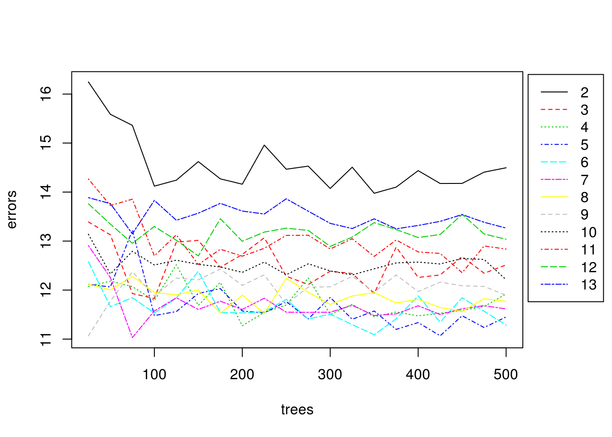 The smallest is output by the code below.
(best<-arrayInd(which.min(errors),dim(errors)))## [,1] [,2]
## [1,] 3 6So it appears that \(p=\) 7 and 75 trees gives the best result. Averaging the error along the columns also gives the usual bias variance trade-off curve. The minimum occurs at \(p=6.\)
avgErr <- colMeans(errors)
plot(mtries,avgErr, type="l",ylab="Average error",xlab="p")
points(mtries[which.min(avgErr)],avgErr[which.min(avgErr)],col="red",pch="x")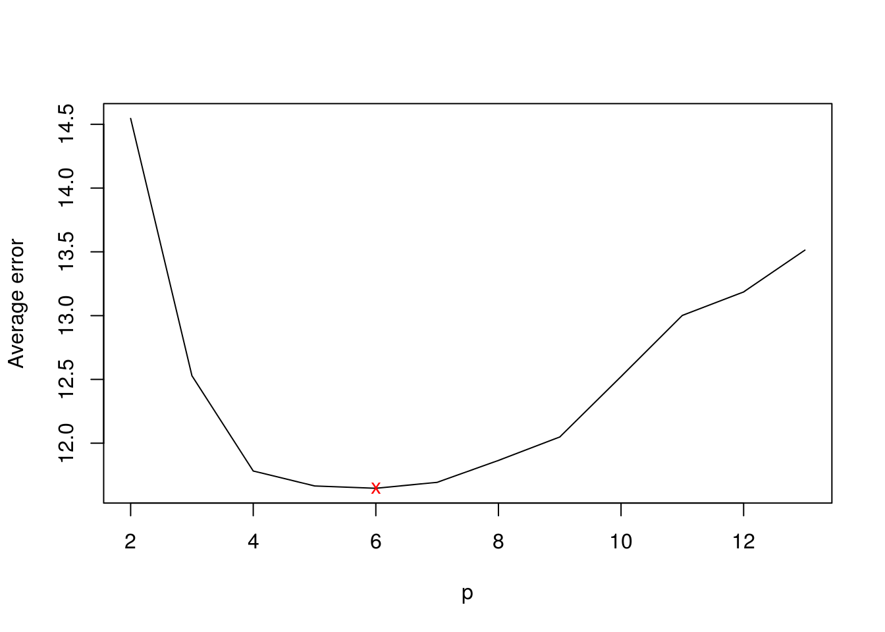
data(Carseats,package="ISLR") set.seed(927) train<-sample.int(nrow(Carseats),size=nrow(Carseats)/2)library(tree) tree.mod <- tree(Sales ~ ., data=Carseats, subset=train) plot(tree.mod) text(tree.mod,pretty=0)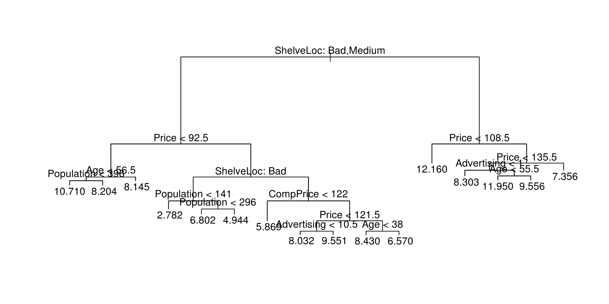 From the tree, we can see that shelf location is pretty important and results in generally lower sales. After that, we can see that price is second most important since it is the variable in both branches below the root.
y.pred<-predict(tree.mod, Carseats[-train,]) y.test<-Carseats[-train,]$Sales mean((y.pred-y.test)^2)## [1] 5.155457set.seed(927) tree.mod.cv <- cv.tree(tree.mod) tree.mod.cv## $size ## [1] 16 15 14 12 11 10 9 8 7 6 5 4 3 2 1 ## ## $dev ## [1] 822.3025 838.0288 833.1498 805.5810 792.3865 820.8750 852.7767 ## [8] 904.5314 912.5343 926.3326 1090.8848 1086.3376 1106.7379 1100.6977 ## [15] 1479.5594 ## ## $k ## [1] -Inf 14.98722 16.47062 18.21130 18.46919 22.60747 25.26386 ## [8] 31.85974 36.16413 46.26508 85.18177 88.45656 106.21737 147.19886 ## [15] 387.01956 ## ## $method ## [1] "deviance" ## ## attr(,"class") ## [1] "prune" "tree.sequence"plot(tree.mod.cv)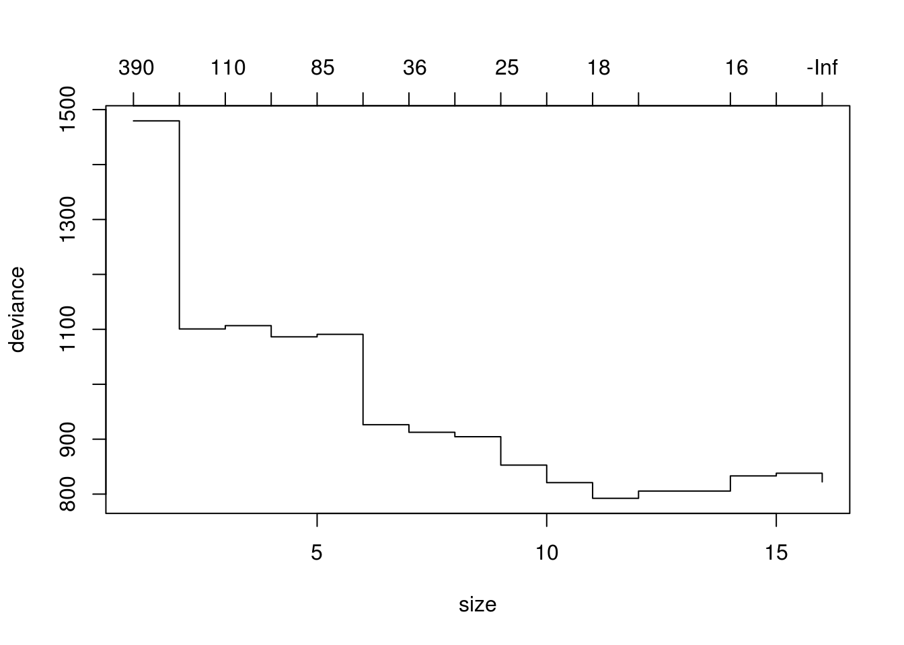 The size with the smallest deviance is 11. Let’s see if it improves the test MSE.
best.size <- tree.mod.cv$size[which.min(tree.mod.cv$dev)] prune.mod <- prune.tree(tree.mod,best=best.size) y.pred<-predict(prune.mod, Carseats[-train,]) mean((y.pred-y.test)^2)## [1] 5.034429It improved the test MSE somewhat, but not considerably. I’m going to plot the test error as a function of the size.
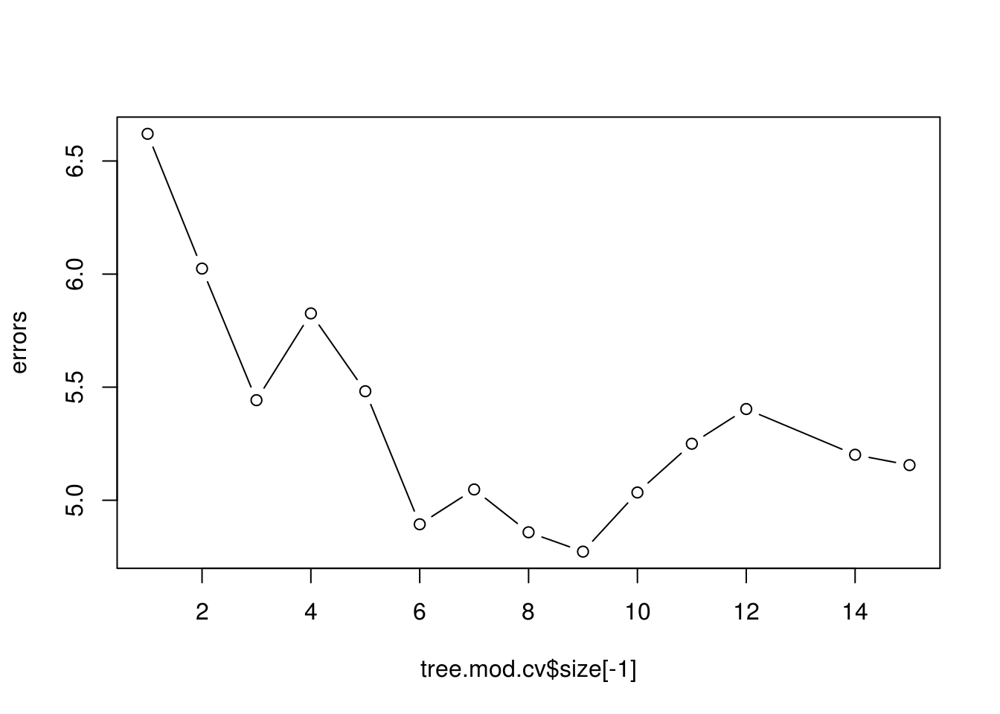errors <- double(length(tree.mod.cv$size[-1])) for(i in seq_along(tree.mod.cv$size[-1])){ size <- tree.mod.cv$size[i] prune.mod <- prune.tree(tree.mod,best=size) y.pred<-predict(prune.mod, Carseats[-train,]) errors[i] <- mean((y.pred-y.test)^2) } plot(tree.mod.cv$size[-1],errors,type="b")library(randomForest) set.seed(927) bag.mod <- randomForest(Sales ~ ., data=Carseats, subset=train, mtry=(ncol(Carseats)-1), importance=TRUE) y.pred<-predict(bag.mod,Carseats[-train,]) mean((y.pred-y.test)^2)## [1] 2.955195The bagging method improves upon the previous methods dramatically. Here is the importace.
importance(bag.mod)
As before, it indicates that price and shelf location are most important.## %IncMSE IncNodePurity ## CompPrice 26.3089451 162.159898 ## Income 7.1203118 83.821531 ## Advertising 11.2133318 84.206868 ## Population 1.7575225 66.737701 ## Price 49.6763043 393.586030 ## ShelveLoc 62.6657938 470.259185 ## Age 12.7540444 107.060198 ## Education 1.1755872 37.428097 ## Urban -2.3668327 7.366765 ## US 0.5030577 5.677343mtry<-1:10 errors <- double(length(mtry)) set.seed(927) for(i in seq_along(mtry)){ m <- mtry[i] rf.mod <- randomForest(Sales ~ ., data=Carseats, subset=train, mtry=m) y.pred<-predict(rf.mod,Carseats[-train,]) errors[i]<-mean((y.pred-y.test)^2) } plot(mtry,errors,type="b",pch="x") points(mtry[which.min(errors)],min(errors),col="red",pch="x")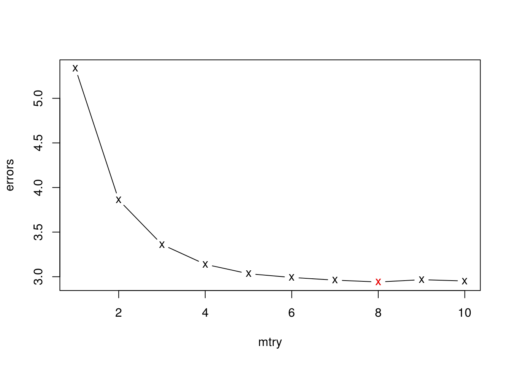 The effect start to flatten out after 6 variables. The average of the error for \(m=6, \dots 10\) is 2.9627049. The results are pretty similar to bagging.
data(OJ,package="ISLR") set.seed(927) train<-sample.int(nrow(OJ),size=800)- First fit the model,
library(tree) tree.mod <- tree(Purchase ~ ., data=OJ, subset=train) y.test <- OJ[-train,"Purchase"] summary(tree.mod)## ## Classification tree: ## tree(formula = Purchase ~ ., data = OJ, subset = train) ## Variables actually used in tree construction: ## [1] "LoyalCH" "DiscMM" "PriceDiff" "ListPriceDiff" ## Number of terminal nodes: 7 ## Residual mean deviance: 0.7698 = 610.5 / 793 ## Misclassification error rate: 0.1638 = 131 / 800There is seven terminal nodes. The train misclassification rate is below.
y.pred <- predict(tree.mod, OJ[train,], type="class") y.train<-OJ[train,"Purchase"] (unpruned.err <- mean(y.pred != y.train))## [1] 0.16375tree.mod
Looking at terminal 27 and 26, we can see that the list price difference matters at that point in the true.## node), split, n, deviance, yval, (yprob) ## * denotes terminal node ## ## 1) root 800 1071.000 CH ( 0.60875 0.39125 ) ## 2) LoyalCH < 0.48285 297 324.400 MM ( 0.23569 0.76431 ) ## 4) LoyalCH < 0.0356415 54 9.959 MM ( 0.01852 0.98148 ) * ## 5) LoyalCH > 0.0356415 243 290.000 MM ( 0.28395 0.71605 ) ## 10) DiscMM < 0.47 218 272.200 MM ( 0.31651 0.68349 ) * ## 11) DiscMM > 0.47 25 0.000 MM ( 0.00000 1.00000 ) * ## 3) LoyalCH > 0.48285 503 460.200 CH ( 0.82903 0.17097 ) ## 6) LoyalCH < 0.764572 238 295.000 CH ( 0.68908 0.31092 ) ## 12) PriceDiff < -0.165 36 35.470 MM ( 0.19444 0.80556 ) * ## 13) PriceDiff > -0.165 202 214.300 CH ( 0.77723 0.22277 ) ## 26) ListPriceDiff < 0.135 31 42.680 MM ( 0.45161 0.54839 ) * ## 27) ListPriceDiff > 0.135 171 152.500 CH ( 0.83626 0.16374 ) * ## 7) LoyalCH > 0.764572 265 97.720 CH ( 0.95472 0.04528 ) *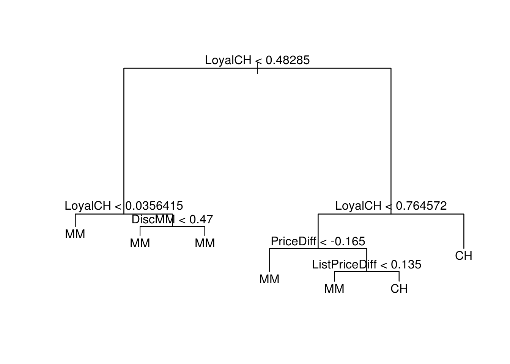 We can see that the root node, loyalty to the branch is very important, and is the deciding factor at the top 3 splits. However, even if loyalty is high (by going right, then left, and then right down the tree), list price still can be a deciding factor.plot(tree.mod) text(tree.mod,pretty=0)- Looking at the table, we can see that
y.pred <- predict(tree.mod, newdata=OJ[-train,],type="class") table(y.pred,y.test)## y.test ## y.pred CH MM ## CH 129 13 ## MM 37 91The test error rate isunpruned.test.err <- mean(y.pred != y.test)mean(y.pred != y.test)= 0.1851852.- and g.
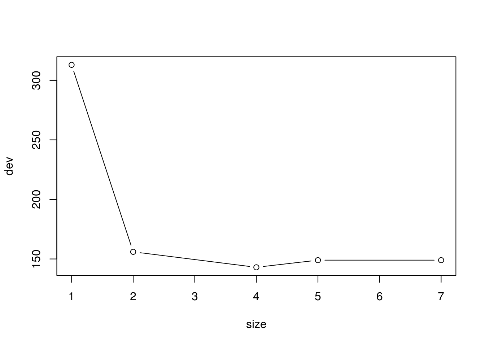set.seed(927) tree.mod.cv <- cv.tree(tree.mod,FUN=prune.misclass) with(tree.mod.cv,plot(size,dev,type="b"))- The size with the lowest CV misclassification rate is 4.
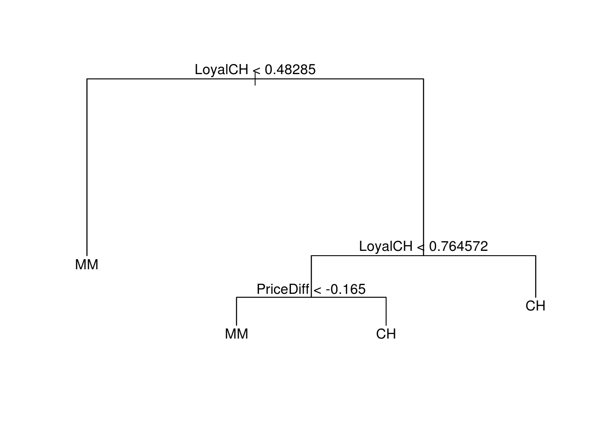best<-with(tree.mod.cv,size[which.min(dev)]) tree.mod.prune <- prune.tree(tree.mod,best=best) plot(tree.mod.prune) text(tree.mod.prune,pretty=0)y.pred.prune <- predict(tree.mod.prune,OJ[train,],type="class") pruned.err <- mean(y.pred.prune != y.train) cbind(unpruned.err, pruned.err)
The pruned error for the training set is slightly larger.## unpruned.err pruned.err ## [1,] 0.16375 0.1675y.pred.prune <- predict(tree.mod.prune,OJ[train,],type="class") pruned.test.err <- mean(y.pred.prune != y.train) cbind(unpruned.test.err, pruned.test.err)## unpruned.test.err pruned.test.err ## [1,] 0.1851852 0.1675The pruned test error is much better than the unpruned.
data(Hitters,package="ISLR") Hitters <- na.omit(Hitters) Hitters$Salary <- log(Hitters$Salary)train<-1:200- The plot below suggests that there is some overfitting going on considering that the training error just keeps going down.
library(gbm)## Loading required package: survival## ## Attaching package: 'survival'## The following object is masked from 'package:boot': ## ## aml## The following object is masked from 'package:caret': ## ## cluster## Loading required package: parallel## Loaded gbm 2.1.3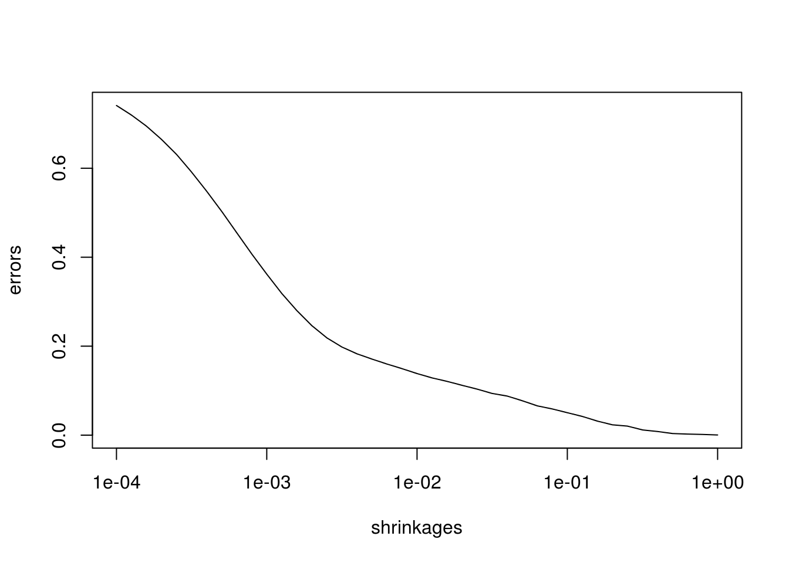set.seed(927) shrinkages <- 10^(seq(-4,0,by=.1)) errors <- double(length(shrinkages)) for(i in seq_along(shrinkages)) { s<-shrinkages[i] boost.mod <- gbm(Salary ~ .,data=Hitters[train,],distribution="gaussian",n.trees=1000,shrinkage=s) y.pred <- predict(boost.mod,n.trees=1000) errors[i] <- mean((y.pred-Hitters[train,]$Salary)^2) } plot(shrinkages,errors,type="l",log="x")- It appears that the test error seems to bottom out at just below .01.
set.seed(927) shrinkages <- 10^(seq(-4,0,by=.1)) test.errs <- double(length(shrinkages)) for(i in seq_along(shrinkages)) { s <- shrinkages[i] boost.mod <- gbm(Salary ~ .,data=Hitters[train,],distribution="gaussian",n.trees=1000,shrinkage=s) y.pred <- predict(boost.mod,Hitters[-train,],n.trees=1000) test.errs[i] <- mean((y.pred-Hitters[-train,]$Salary)^2) } plot(shrinkages,test.errs,type="l",log="x")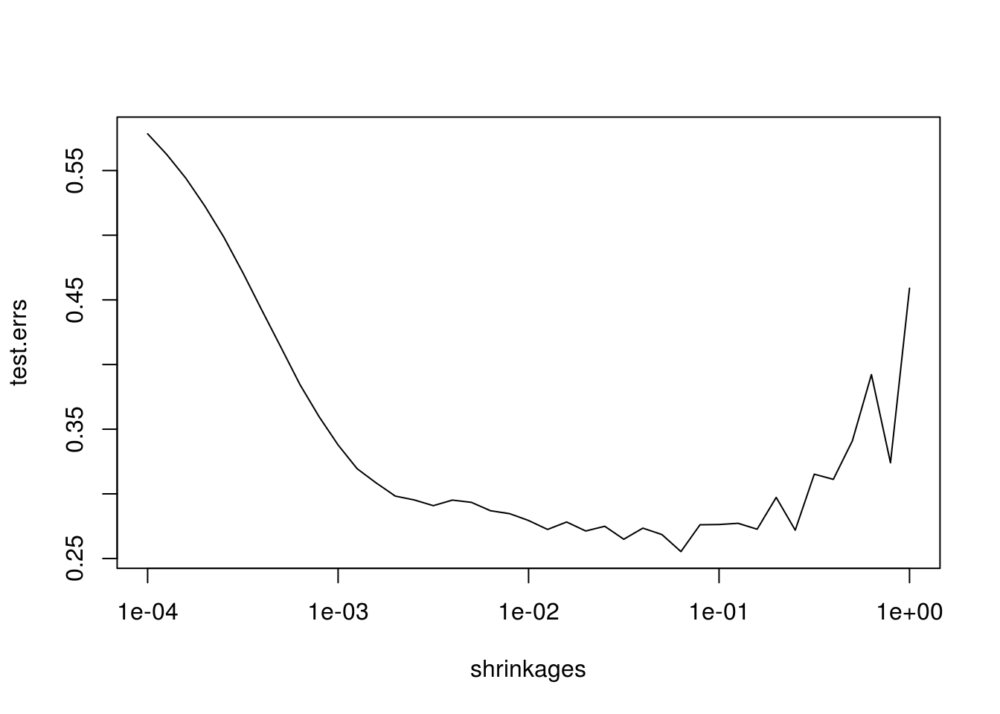
best.shrink <- shrinkages[which.min(test.errs)]- First, a simple linear regression
y.test <- Hitters[-train,"Salary"] lm.mod <- lm(Salary ~ ., data=Hitters, subset=train) lm.pred <- predict(lm.mod, Hitters[-train,]) (lm.err <- mean((lm.pred-y.test)^2))## [1] 0.4917959Now for the Lasso.
library(glmnet) x<-model.matrix(Salary~.,Hitters,subset=train)[,-1] y<-Hitters$Salary lasso.cv <- cv.glmnet(x[train,],y[train],alpha=1) bestlam <- lasso.cv$lambda.min lasso.mod <- glmnet(x[train,],y[train],alpha=1) lasso.pred <- predict(lasso.mod,s=bestlam,newx=x[-train,]) (lasso.err <- mean((lasso.pred-y.test)^2))## [1] 0.4709719Comparing the results.
boost.mod <- gbm(Salary ~ .,data=Hitters[train,],distribution="gaussian",n.trees=1000,shrinkage=best.shrink) y.pred <- predict(boost.mod,Hitters[-train,],n.trees=1000) boost.err <- mean((y.pred-Hitters[-train,]$Salary)^2) rbind(lm.err,lasso.err,boost.err)
We can see that the boosting outperformed that linear regression and lasso considerably.## [,1] ## lm.err 0.4917959 ## lasso.err 0.4709719 ## boost.err 0.2883988summary(boost.mod,plotit=FALSE)
At bats is the most important.## var rel.inf ## CAtBat CAtBat 17.5891423 ## CRBI CRBI 8.9092457 ## Years Years 7.8985139 ## CRuns CRuns 7.5641642 ## PutOuts PutOuts 6.8435706 ## CHits CHits 6.8225708 ## CHmRun CHmRun 6.4953350 ## Walks Walks 6.2231730 ## CWalks CWalks 5.9689286 ## Hits Hits 5.2046670 ## Assists Assists 3.8874446 ## HmRun HmRun 3.6736184 ## RBI RBI 3.3908016 ## AtBat AtBat 3.0983749 ## Errors Errors 2.7066416 ## Runs Runs 2.2884151 ## Division Division 0.7817312 ## NewLeague NewLeague 0.5083451 ## League League 0.1453164library(randomForest) bag.mod <- randomForest(Salary ~ ., data=Hitters, subset=train,mtry=ncol(Hitters)-1) bag.pred<-predict(bag.mod,Hitters[-train,]) (bag.err <- mean((bag.pred-y.test)^2))## [1] 0.2246912Bagging performs the best.
data(Caravan,package="ISLR") train<-1:1000- The most important variables are listed below.
library(randomForest) set.seed(927) bag.mod <- randomForest(Purchase ~ ., data=Caravan,subset=train,mtry=ncol(Caravan)-1,shrinkage=0.01) imp.vec<-importance(bag.mod) head(imp.vec[order(imp.vec,decreasing=TRUE),])
MOSTYPE is customer subtype. MGODGE is no religion (proportion?). PPERSAUT is contribution car policies. MGODPR is protestant. MOPLHOOG is high level education. MKOOPKLA is purchasing power class. The rest of the variable definitions can be found at http://www.liacs.nl/~putten/library/cc2000/data.html.## MOSTYPE PPERSAUT MGODGE MOPLHOOG MGODPR PBRAND ## 4.365011 4.149740 4.115921 3.546324 3.236479 3.016892y.test <- Caravan[-train,]$Purchase y.pred <- ifelse(predict(bag.mod,Caravan[-train,],type="prob")[,"Yes"]>.2,"Yes","No") table(y.pred,y.test)## y.test ## y.pred No Yes ## No 4120 231 ## Yes 413 58The proportion of people predicted to make a purchase that do make a purchase is 0.1231423. Logistic regression is below.
log.mod <- glm(Purchase ~ ., family=binomial, data=Caravan,subset=train)## Warning: glm.fit: fitted probabilities numerically 0 or 1 occurredlog.pred <- ifelse(predict(log.mod, Caravan[-train,], type="response") > .2, "Yes", "No")## Warning in predict.lm(object, newdata, se.fit, scale = 1, type = ## ifelse(type == : prediction from a rank-deficient fit may be misleadingtable(log.pred,y.test)## y.test ## log.pred No Yes ## No 4183 231 ## Yes 350 58The porportion for logistic regression is 0.1421569 so it performs a little better. Let’s try KNN.
library(class) train.X <- Caravan[train,-ncol(Caravan)] train.Y <- Caravan[train,ncol(Caravan)] test.X <- Caravan[-train,-ncol(Caravan)] knn.pred <- knn(train.X,test.X,train.Y,k=2) table(knn.pred, y.test)## y.test ## knn.pred No Yes ## No 4276 267 ## Yes 257 22